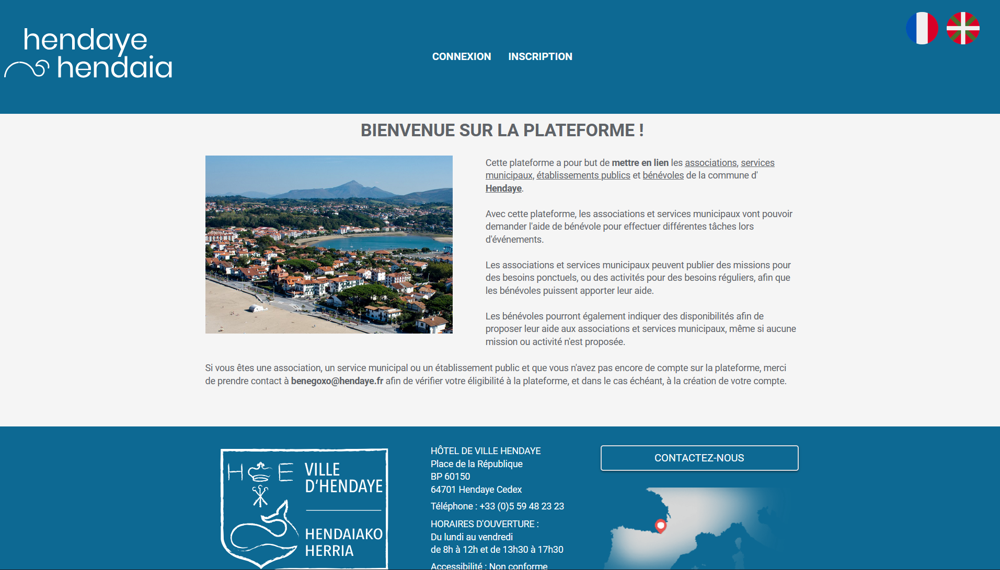
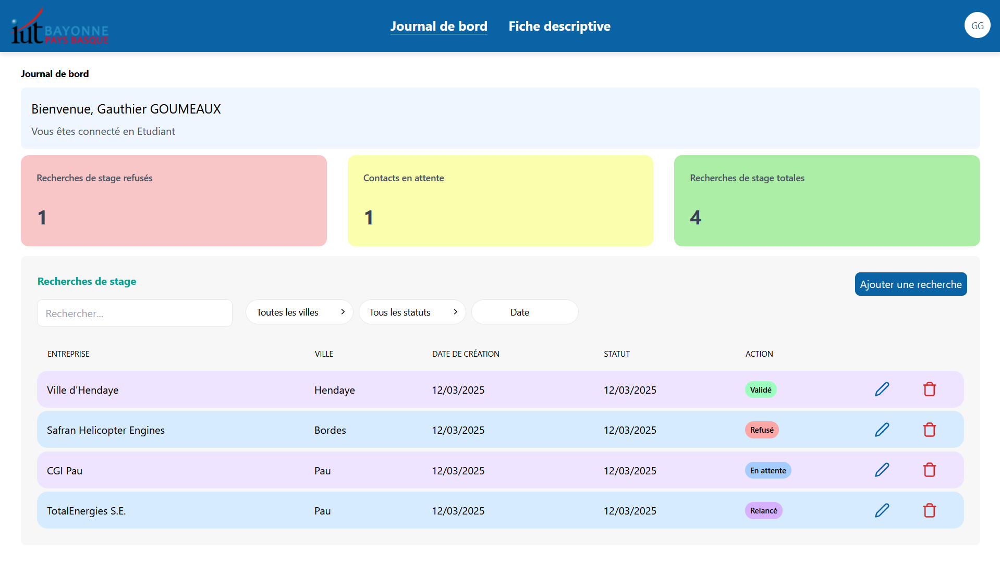

À propos de moi

Hello ! Je m'appelle Gauthier GOUMEAUX, j'ai 23 ans et je suis originaire de Pau (64000)
Actuellement en alternance à la mairie d'Hendaye, je suis étudiant en troisième année de BUT Informatique à l'IUT de Bayonne et du Pays Basque
Passioné d'informatique, j'ai choisi de faire un bac STIDD avec l'option SIN que j'ai obtenu avec la mention bien.
Voulant tenter ma chance en école d'ingénieur, j'ai intégré la classe préparatoire TSI du Lycée Saint-Cricq à Pau et y ai validé mon année.
Etant un peu perdu dans mon projet professionnel, j'ai choisi de mettre en pause mes études pendant un an afin de faire murir ma réflexion. Et lors cette année, j'ai effectué un service civique au sein de l'Art Scène Théâtre à Pau.
J'ai ensuite repris mes études en BUT Informatique à Bayonne, convaincu de vouloir travailler dans le domaine de l'informatique avec un attrait vers la cybersécurité.
J'ai eu la chance de trouver une alternance à la mairie d'Hendaye, où je travaille sur un projet de développement d'une application web, dans laquelle j'ai implémenté certains mécanismes de sécurité.
Après mon BUT, je souhaite poursuivre mes études en école d'ingénieur pour me spécialiser en cybersécurité.

Français
Langue maternelle
Anglais
Niveau B2
Espagnol
Niveau A2
Travail en équipe
Collaboration et communication
Gestion de projet
Organisation et planification
Résolution de problèmes
Analyse et créativitéTechnologies
DÉVELOPPEMENT WEB
 HTML
HTML
 CSS
CSS
 JavaScript
JavaScript
 PHP
PHP
 Laravel
Laravel
DÉVELOPPEMENT D'APPLICATIONS
 C++
C++
 Java
Java
SÉCURITÉ WEB
 Contrôle d'accès
Contrôle d'accès
Projets
BeneGoxo - Alternance
Application web permettant de mettre en lien les bénévoles, associations et services municipaux de la ville d'Hendaye
Suivi de stage - SAE
Application web permettant aux étudiants du département Informatique de l'IUT de Bayonne de faire le suivi de leurs recherches de stage

Diplômes
Expériences
2022 - 2025
BUT Informatique
Parcours IAMSI
IUT de Bayonne et du Pays Basque, Anglet 64600
2020 - 2021
Classé préparatoire
Technique et Science de l'Ingénieur
Lycée Saint-Cricq, Pau 64000
2018 - 2020
Baccalauréat STIDD
Option SIN
Lycée Saint-Cricq, Pau 64000
2023 - 2025
Alternance
Mairie d'Hendaye, 64700 Hendaye
Développement d'une application web, formation utilisateur
2021 - 2022
Service civique
Art Scène Théâtre, 64000 Pau
Régie son et lumière, et régie bande-son
Août 2018
Travail saisonnier
E.Leclerc, 64110 Mazères-Lezons
Mise en rayon
Références
Contact
Utilisation des photos
Les images utilisées sur ce site proviennent des sources suivantes :
Portrait : Photo personnelle
HTML : Wikipédia - W3C - CC BY 3.0
CSS : Wikipédia - Rudloff - CC BY 3.0
JavaScript : Wikipédia - Chris Williams - Licence MIT
PHP : Wikipédia - Colin Viebrock - CC BY 4.0
Laravel : Wikipédia - Laravel - Domaine public
SQL (image modifié) : Wikipédia - Alaa Kadour - CC BY-SA 4.0
C++ : Wikipédia - Jeremy Kratz - Domaine public
Java : Wikipédia - Oracle - Marque déposée
QtCreator : Qt - Qt Group - Marque déposée
Burp Suite Community Edition :
PC SOFT : PC SOFT - PC SOFT - Marque déposée
Angular : Wikipédia - Google - CC BY 4.0
Clavier: Flaticon - FreePik
Cadenas: Flaticon - FreePik
GitHub : GitHub - GitHub, Inc - Marque déposée
LinkedIn : LinkedIn - LinkedIn - Marque déposée
YouTube : YouTube - Google - Marque déposée
Merci de respecter les droits d'auteur associés.